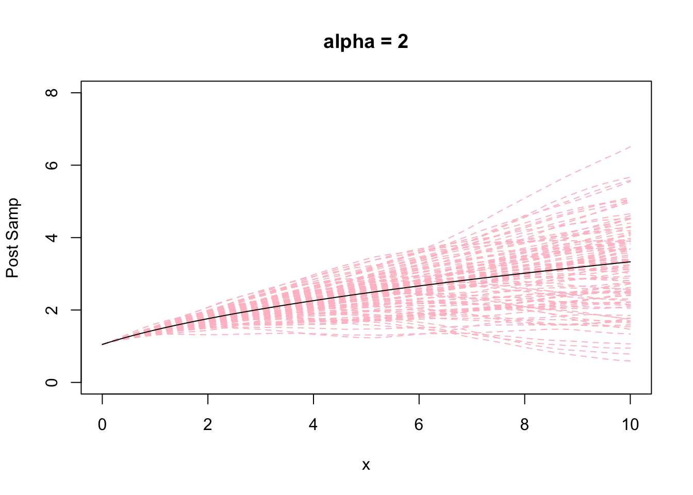
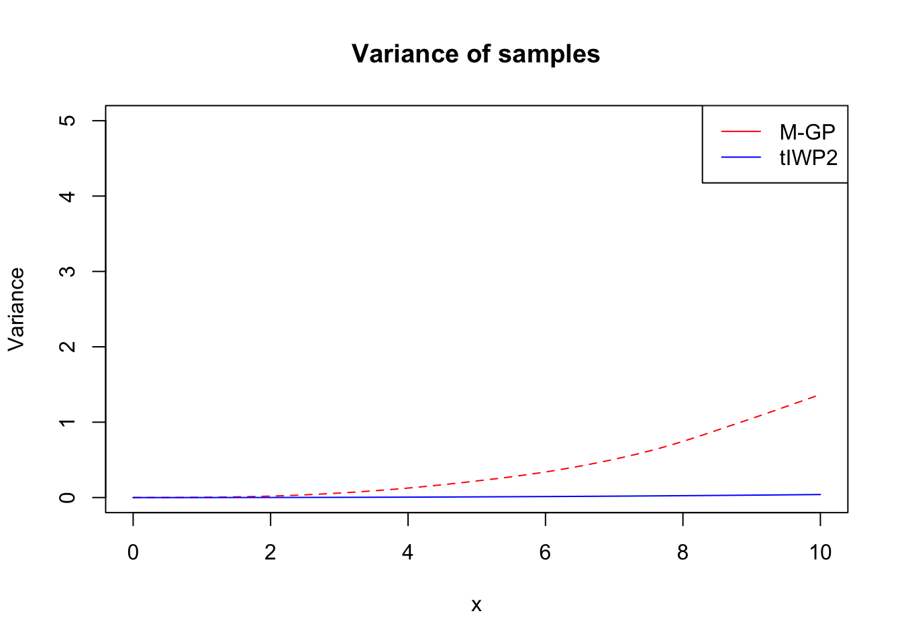
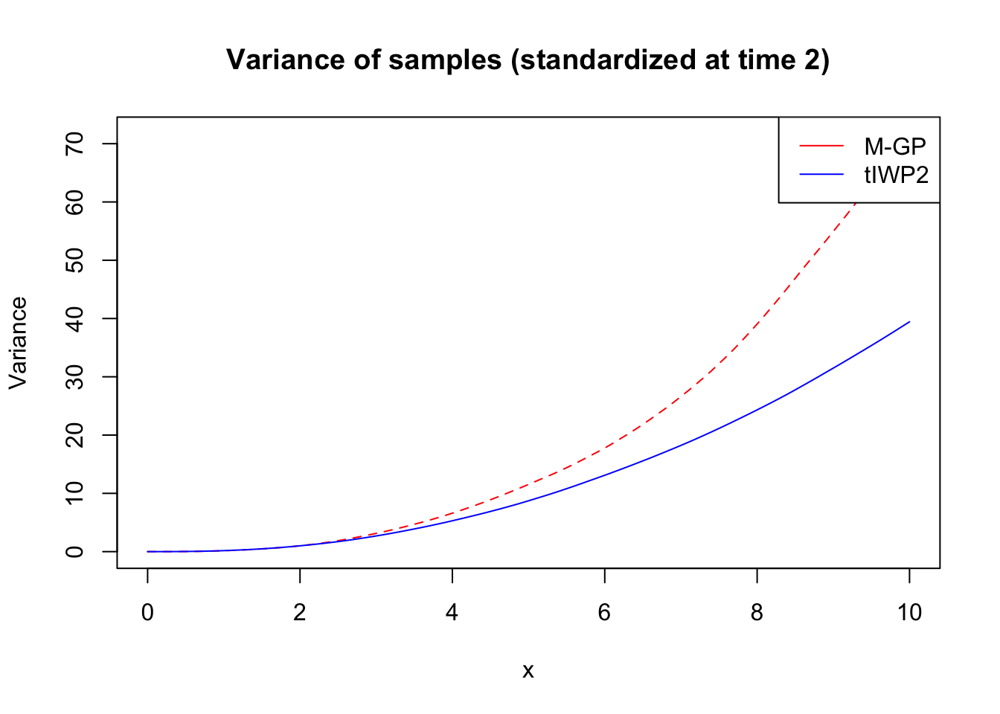
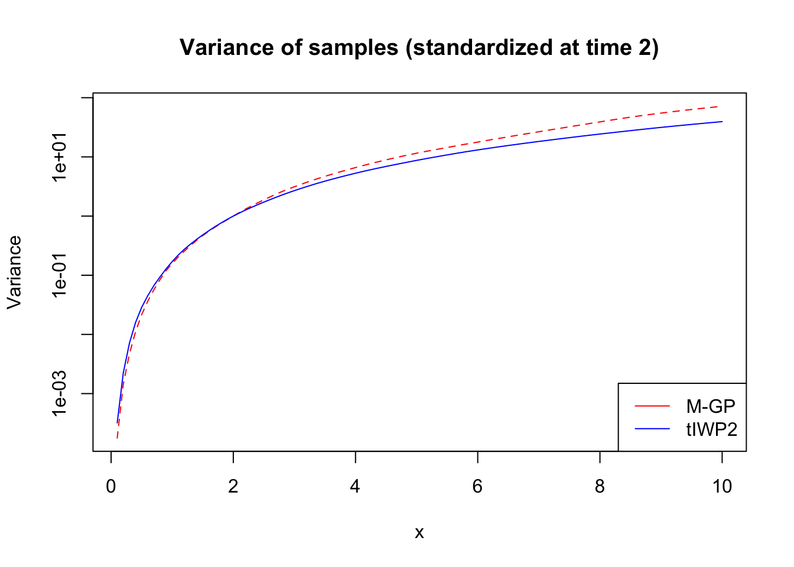
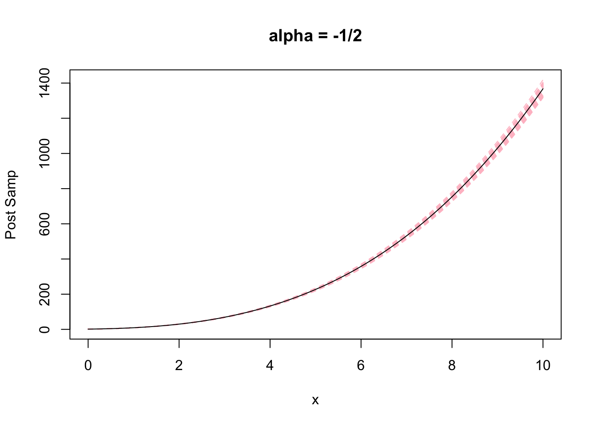

Comparing mGP and tIWP2
Ziang Zhang
2024-06-27
Last updated: 2024-06-27
Checks: 7 0
Knit directory: summary/
This reproducible R Markdown analysis was created with workflowr (version 1.7.1). The Checks tab describes the reproducibility checks that were applied when the results were created. The Past versions tab lists the development history.
Great! Since the R Markdown file has been committed to the Git repository, you know the exact version of the code that produced these results.
Great job! The global environment was empty. Objects defined in the global environment can affect the analysis in your R Markdown file in unknown ways. For reproduciblity it’s best to always run the code in an empty environment.
The command set.seed(20240619) was run prior to running
the code in the R Markdown file. Setting a seed ensures that any results
that rely on randomness, e.g. subsampling or permutations, are
reproducible.
Great job! Recording the operating system, R version, and package versions is critical for reproducibility.
Nice! There were no cached chunks for this analysis, so you can be confident that you successfully produced the results during this run.
Great job! Using relative paths to the files within your workflowr project makes it easier to run your code on other machines.
Great! You are using Git for version control. Tracking code development and connecting the code version to the results is critical for reproducibility.
The results in this page were generated with repository version 7865755. See the Past versions tab to see a history of the changes made to the R Markdown and HTML files.
Note that you need to be careful to ensure that all relevant files for
the analysis have been committed to Git prior to generating the results
(you can use wflow_publish or
wflow_git_commit). workflowr only checks the R Markdown
file, but you know if there are other scripts or data files that it
depends on. Below is the status of the Git repository when the results
were generated:
Ignored files:
Ignored: .DS_Store
Ignored: .RData
Ignored: .Rhistory
Ignored: .Rproj.user/
Ignored: analysis/.Rhistory
Ignored: code/.DS_Store
Note that any generated files, e.g. HTML, png, CSS, etc., are not included in this status report because it is ok for generated content to have uncommitted changes.
These are the previous versions of the repository in which changes were
made to the R Markdown (analysis/mGP_vs_tIWP2.rmd) and HTML
(docs/mGP_vs_tIWP2.html) files. If you’ve configured a
remote Git repository (see ?wflow_git_remote), click on the
hyperlinks in the table below to view the files as they were in that
past version.
| File | Version | Author | Date | Message |
|---|---|---|---|---|
| Rmd | 7865755 | Ziang Zhang | 2024-06-27 | update the webstie |
| html | 7865755 | Ziang Zhang | 2024-06-27 | update the webstie |
| html | 2987e0a | Ziang Zhang | 2024-06-27 | Build site. |
| Rmd | f9aff2d | Ziang Zhang | 2024-06-27 | wflow_publish(all = T) |
| html | 2b5cbdb | Ziang Zhang | 2024-06-27 | Build site. |
| Rmd | 00a7b5d | Ziang Zhang | 2024-06-27 | wflow_publish("analysis/mGP_vs_tIWP2.rmd") |
Introduction
There are two ways to parametrize a GP prior that penalizes the function \(g\) toward the monotone base model \(\text{span}\{1,m(x)\}\) where \(m(x)\) is a monotonically increasing function such that \(m'(x)>0\) for all \(x \in \Omega\).
The first way is to use the M-GP prior. Let \(\alpha(x) = \frac{m''(x)}{m'(x)}\) denotes the relative curvature function, then the M-GP prior is defined as \[ L_\alpha g(x) := D^2 g(x) - \alpha(x) D g(x) = \sigma\xi(x). \]
An alternative method is to use the transformed IWP2 prior (t-IWP2). The IWP-2 is defined as: \[ D^2 \tilde{g}(x^*) = \sigma\xi(x^*). \] So it has base model being \(\text{span}\{1, x^*\}\). By transforming the coordinate \(x^* = m(x)\), we can obtain the t-IWP2 prior as \(g(x) = \tilde{g}(m(x))\). The base model of t-IWP2 is therefore \(\text{span}\{1, m(x)\}\), which is the same as the M-GP prior.
SDE characterization of the t-IWP2
To conceptually compare the two priors, we can consider the SDE characterization of the t-IWP2 prior.
\[\begin{equation} \begin{aligned} g'(x) &= \tilde{g}'(m(x)) m'(x).\\ g''(x) &= \tilde{g}''(m(x)) m'(x)^2 + \tilde{g}'(m(x)) m''(x) \\ &= \tilde{g}''\left(m(x)\right) m'(x)^2 + g'(x) \frac{m''(x)}{m'(x)} \\ &= \tilde{g}''\left(m(x)\right) m'(x)^2 + g'(x) \alpha(x). \end{aligned} \end{equation}\] Therefore we have: \[L_\alpha g(x) = \tilde{g}''\left(m(x)\right) m'(x)^2.\]
Note that \(\tilde{g}''\left(m(x)\right) m'(x)^2 = \tilde{g}''\left(m(x)\right) m'(x)^{1/2} m'(x)^{3/2}\), and that \(\tilde{g}''\left(m(x)\right) m'(x)^{1/2} = \sigma\xi(x)\) (Claim 1, proof attached later). We can then write the SDE of the t-IWP2 prior as: \[ L_\alpha g(x) = [\sigma m'(x)^{3/2}]\xi(x). \]
Equivalently, we can move the extra \(m'(x)^{3/2}\) to the left hand side and define a new operator \(L_\alpha^* = m'(x)^{-3/2} L_\alpha\) and then \(L_\alpha^*g(x) = \sigma\xi(x)\). It is then obvious that the t-IWP2 prior is (almost) equivalent to the M-GP prior, except the scaling factor \(\sigma m'(x)^{-3/2}\) on the differential operator. The effect of this scaling factor essentially changes the constant \(\sigma\) in the M-GP prior to a function of \(x\) in the t-IWP2 prior (i.e. \(\sigma(x) = [\sigma m'(x)^{3/2}]\)). This implies comparing to the M-GP prior, the t-IWP2 prior has a more flexible penalty strength that can vary with \(x\). When the function is changing fast (\(m'\) is large), the t-IWP2 prior has a small penalty and allows the function to deviate more from the base model than M-GP.
Proof of Claim 1: \(\tilde{g}''\left(m(x)\right) m'(x)^{1/2} = \xi(x)\)
Without the loss of generality, let’s assume \(\sigma = 1\) and let \(x^* = m(x)\). To show \(\tilde{g}''\left(m(x)\right) m'(x)^{1/2} = \xi(x)\), we first notice that \(\tilde{g}''\left(m(x)\right) m'(x)^{1/2} = \xi(m(x)) m'(x)^{1/2}\) as \(\tilde{g}\) is an IWP2.
For any \(g_1, g_2 \in L^2\), we have: \[\begin{equation} \begin{aligned} \int \xi(m(x)) m'(x)^{1/2} g_1(x) dx &= \int \xi(x^* ) m'(m^{-1}(x^* ))^{-1/2} g_1(m^{-1}(x^* )) dx^* \\ &= \int \xi(x^* ) m'(x^* )^{-1/2} g_1(m^{-1}(x^*)) dx. \\ \end{aligned} \end{equation}\]
Therefore, using property of Gaussian white noise \(\xi(x^*)\), we have: \[\begin{equation} \begin{aligned} \text{Cov}\bigg[\int\xi(m(x)) m'(x)^{1/2} g_1(x)dx, \int \xi(m(x)) m'(x)^{1/2} g_2(x)dx \bigg] &= \text{Cov}\bigg[\int\xi(x^* ) m'(m^{-1}(x^* ))^{-1/2} g_1(m^{-1}(x^* ))dx^* , \int \xi(x^* ) m'(x^* )^{-1/2} g_2(m^{-1}(x^* ))dx^* \bigg] \\ &= \int m'(m^{-1}(x^* ))^{-1} g_1(m^{-1}(x^* )) g_2(m^{-1}(x^* )) dx^* \\ &= \int g_1(x) g_2(x) dx \\ &= \text{Cov}\bigg[\int\xi(x) g_1(x)dx, \int \xi(x) g_2(x)dx \bigg]. \end{aligned} \end{equation}\] The proof is hence complete.
Comparison of samples
When \(m(x) = \sqrt{x+c}\):
library(tidyverse)
library(Matrix)
source("code/01-state-space.R")
source("code/02-FEM.R")
source("code/03-sampling.R")To compare the two priors, we can simulate samples from the two priors and compare the samples when \(m(x) = \sqrt x\).
For the M-GP prior:
B = 100
c <- 1.1
m <- function(x) {sqrt(x+c)}
m_deriv <- function(x) {1/(2*sqrt(x+c))}
samps0 <- mGP_sim(mesh_size = 0.1, max_t = 10, alpha = (2), c = c, initial_vec = c(m(0),m_deriv(0)), sd = 0.1)
result0 <- samps0[,1:2]
for (i in 1:B) {
samps0 <- mGP_sim(mesh_size = 0.1, max_t = 10, alpha = (2), c = c, initial_vec = c(m(0),m_deriv(0)), sd = 0.1)
result0 <- cbind(result0, samps0[,2])
}
# result0[1:nrow(result0),-1] <- result0[1:nrow(result0),-1]/sd(result0[nrow(result0),-1])
matplot(x = result0[,1], y = result0[,-1], type = 'l', ylab = "Post Samp", xlab = "x", main = "alpha = 2", ylim = c(0,8), lty = "dashed", col = "pink")
lines(x = result0[,1], y = m(result0[,1]), col = "black", lty = "solid")
For the t-IWP2 prior:
# set the original grid
t <- seq(0, 10, by = 0.1)
# compute the transformed grid
t_trans <- m(t)
# sampling from tIWP2
samps1 <- sim_IWp_Var(t = t_trans, p = 2, sd = 0.1, initial_vec = c(m(0),1))
result1 <- cbind(c(t), samps1[,2])
for (i in 1:B) {
samps1 <- sim_IWp_Var(t = t_trans, p = 2, sd = 0.1, initial_vec = c(m(0),1))
result1 <- cbind(result1, samps1[,2])
}
# result1[1:nrow(result1),-1] <- result1[1:nrow(result1),-1]/sd(result1[nrow(result1),-1])
matplot(x = result1[,1], y = result1[,-1], type = 'l', ylab = "Post Samp", xlab = "x", main = "tIWP2", ylim = c(0,8), lty = "dashed", col = "pink")
lines(x = result1[,1], y = m(result1[,1]), col = "black", lty = "solid")
Compare the variance of the two priors:
## Variance of overtime:
var0 <- apply(result0[,-1], 1, var)
var1 <- apply(result1[,-1], 1, var)
plot(x = result0[,1], y = var0, type = 'l', ylab = "Variance", xlab = "x", main = "Variance of samples", ylim = c(0,5), lty = "dashed", col = "pink")
lines(x = result1[,1], y = var1, col = "black", lty = "solid")
| Version | Author | Date |
|---|---|---|
| 2987e0a | Ziang Zhang | 2024-06-27 |
When \(m(x) = (x+c)^3\):
m <- function(x) {(x+c)^3}
m_deriv <- function(x) {3*(x+c)^2}
samps0 <- mGP_sim(mesh_size = 0.1, max_t = 10, alpha = (-1/2), c = c, initial_vec = c(m(0),m_deriv(0)), sd = 0.1)
result0 <- samps0[,1:2]
for (i in 1:B) {
samps0 <- mGP_sim(mesh_size = 0.1, max_t = 10, alpha = (-1/2), c = c, initial_vec = c(m(0),m_deriv(0)), sd = 0.1)
result0 <- cbind(result0, samps0[,2])
}
matplot(x = result0[,1], y = result0[,-1], type = 'l', ylab = "Post Samp", xlab = "x", main = "alpha = -1/2", lty = "dashed", col = "pink")
lines(x = result0[,1], y = m(result0[,1]), col = "black", lty = "solid")
| Version | Author | Date |
|---|---|---|
| 2987e0a | Ziang Zhang | 2024-06-27 |
# set the original grid
t <- seq(0, 10, by = 0.1)
# compute the transformed grid
t_trans <- m(t)
# sampling from tIWP2
samps1 <- sim_IWp_Var(t = t_trans, p = 2, sd = 0.1, initial_vec = c(m(0),1))
result1 <- cbind(c(t), samps1[,2])
for (i in 1:B) {
samps1 <- sim_IWp_Var(t = t_trans, p = 2, sd = 0.1, initial_vec = c(m(0),1))
result1 <- cbind(result1, samps1[,2])
}
matplot(x = result1[,1], y = result1[,-1], type = 'l', ylab = "Post Samp", xlab = "x", main = "tIWP2", lty = "dashed", col = "pink")
lines(x = result1[,1], y = m(result1[,1]), col = "black", lty = "solid")
| Version | Author | Date |
|---|---|---|
| 2987e0a | Ziang Zhang | 2024-06-27 |
Compare the variance of the two priors:
## Variance of overtime:
var0 <- apply(result0[,-1], 1, var)
var1 <- apply(result1[,-1], 1, var)
plot(x = result0[,1], y = var0, type = 'l', ylab = "Variance", xlab = "x", main = "Variance of samples", ylim = c(0,1000), lty = "dashed", col = "pink")
lines(x = result1[,1], y = var1, col = "black", lty = "solid")
| Version | Author | Date |
|---|---|---|
| 2987e0a | Ziang Zhang | 2024-06-27 |
sessionInfo()R version 4.3.1 (2023-06-16)
Platform: aarch64-apple-darwin20 (64-bit)
Running under: macOS Monterey 12.7.4
Matrix products: default
BLAS: /Library/Frameworks/R.framework/Versions/4.3-arm64/Resources/lib/libRblas.0.dylib
LAPACK: /Library/Frameworks/R.framework/Versions/4.3-arm64/Resources/lib/libRlapack.dylib; LAPACK version 3.11.0
locale:
[1] en_US.UTF-8/en_US.UTF-8/en_US.UTF-8/C/en_US.UTF-8/en_US.UTF-8
time zone: America/Toronto
tzcode source: internal
attached base packages:
[1] stats graphics grDevices utils datasets methods base
other attached packages:
[1] Matrix_1.6-3 lubridate_1.9.3 forcats_1.0.0 stringr_1.5.0
[5] dplyr_1.1.3 purrr_1.0.2 readr_2.1.4 tidyr_1.3.0
[9] tibble_3.2.1 ggplot2_3.5.1 tidyverse_2.0.0 workflowr_1.7.1
loaded via a namespace (and not attached):
[1] sass_0.4.7 utf8_1.2.3 generics_0.1.3
[4] lattice_0.21-8 stringi_1.7.12 hms_1.1.3
[7] digest_0.6.33 magrittr_2.0.3 timechange_0.2.0
[10] evaluate_0.22 grid_4.3.1 fastmap_1.1.1
[13] rprojroot_2.0.3 jsonlite_1.8.7 processx_3.8.2
[16] whisker_0.4.1 ps_1.7.5 promises_1.2.1
[19] httr_1.4.7 fansi_1.0.5 scales_1.3.0
[22] jquerylib_0.1.4 cli_3.6.1 rlang_1.1.1
[25] LaplacesDemon_16.1.6 munsell_0.5.0 withr_2.5.1
[28] cachem_1.0.8 yaml_2.3.7 parallel_4.3.1
[31] tools_4.3.1 tzdb_0.4.0 colorspace_2.1-0
[34] httpuv_1.6.11 vctrs_0.6.4 R6_2.5.1
[37] lifecycle_1.0.3 git2r_0.33.0 fs_1.6.3
[40] pkgconfig_2.0.3 callr_3.7.3 pillar_1.9.0
[43] bslib_0.5.1 later_1.3.1 gtable_0.3.4
[46] glue_1.6.2 Rcpp_1.0.11 xfun_0.40
[49] tidyselect_1.2.0 rstudioapi_0.15.0 knitr_1.44
[52] htmltools_0.5.6.1 rmarkdown_2.25 compiler_4.3.1
[55] getPass_0.2-4